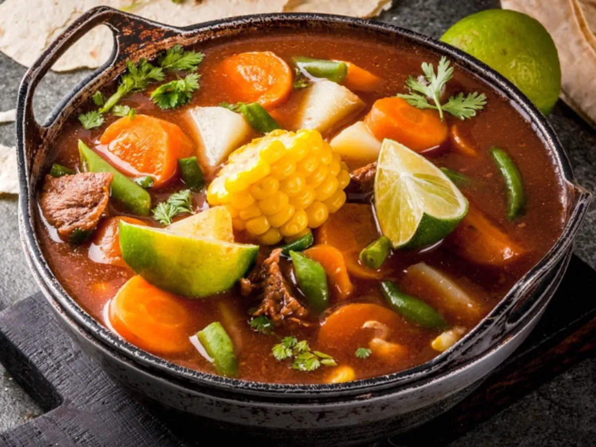

Caldo de Res (Mexican Beef Soup)

Caldo de res is a Mexican beef soup that's extremely hearty and satisfying. The hind shank flavors the broth beautifully as does the marrow in the bones. Garnish with slivered raw onion, lime juice, jalapeños, and more cilantro.
Ingredients
For the soup
- bone-in beef shanks
- vegetable oil
- salt and pepper
- onion
- beef broth
- diced tomatoes
- water
- carrots
- cilantro
- chayotes
- corn
- potatoes
- cabbage
To Garnish
- cilantro
- pickled jalapeños
- finely chopped onion
- lime wedges
- quartered radishes
Directions
- Cut the meat from the bone, leaving some on the bone, and cut into cubes.
- Cook the meat and bones, seasoned with salt and pepper, in oil until brown.
- Cook the onion, then stir in the broth and tomatoes. Simmer until the meat is tender.
- Add water, return to a simmer, then add carrots and cilantro.
- Stir in the remaining vegetables and cook until tender.
- Ladle into bowls and add garnishes.